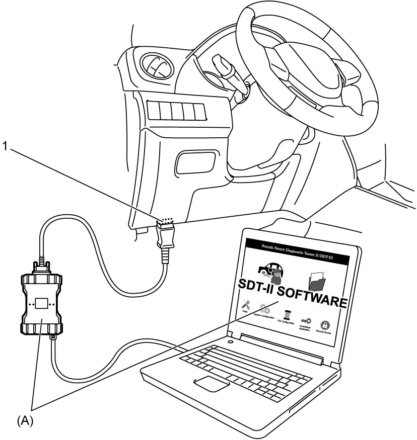
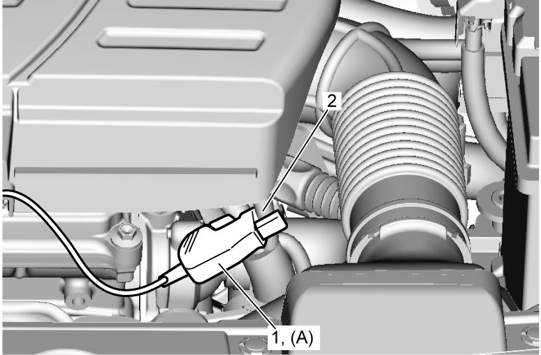
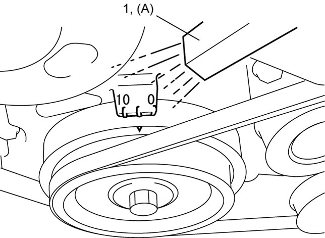

1H
| Ignition Timing Inspection |
NOTE:
For identification of each cylinder, refer to Statement on Cleanliness and Care:M16A.
1)Connect SUZUKI scan tool to DLC (1) with ignition “OFF”.


 "Expand image")
2)Start engine and warm it up to normal operating temperature.
3)Check that all electrical loads except ignition system are switched off.
4)Check that idle speed is within specification referring to Idle Speed Inspection:M16A.
5)Fix ignition timing using “Fixed Spark” function in “Active Test” mode on scan tool.
6)Set timing light (1) to ignition coil harness for No.1 cylinder (2) and check that ignition timing is within specification.
Initial ignition timing
Fixed with SUZUKI scan tool:
5 ± 3° BTDC (at specified idle speed)
Ignition order
1 – 3 – 4 – 2

 "Expand image")

 "Expand image")
7)If check result is not as specified, check the following points.
•CKP sensor
•CKP sensor plate
•ECM and its circuit
•CMP sensor
•CMP sensor rotor teeth of camshaft
•Crankshaft
•Crankshaft pulley
•Crankshaft pulley key
•CKP sensor plate
•ECM and its circuit
•CMP sensor
•CMP sensor rotor teeth of camshaft
•Crankshaft
•Crankshaft pulley
•Crankshaft pulley key
8)After checking initial ignition timing, release ignition timing fixation using scan tool.
9)With engine idling (throttle opening at default position and vehicle stopped), check that ignition timing is about 5° – 15° BTDC (Constant variation within a few degrees from 5° – 15° BTDC indicates no abnormality but proves operation of ignition timing control system.) Also, check that increasing engine speed advances ignition timing.
If check result is not as specified, check the following points.
If check result is not as specified, check the following points.
•ECM and its circuit: 
•TP sensor:
•APP sensor:
•TP sensor:
•APP sensor: